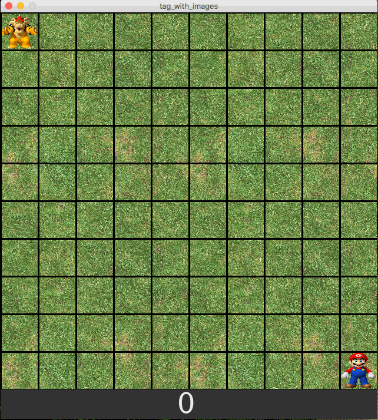

In this assignment, you’ll be writing the same tag program that you wrote in the last assignment. The features and functionality will be exactly the same. However, instead of using processing graphics to create your background and your players, you will use images! See the recording below:

Notice that the game-board is now a top-down terrain image, with a grid overlay. Each of the players are also images (in my case: Mario and Bowser). You can should modify your code from the previous assignment, but use images instead. Remember that you images must be in the same directory as the processing code file. If you want to add an extra tag features, you may, as long as you document them in your header comment.
As usual, if you cannot implement all of the features, you should still submit your code!
You will get credit for each working feature.
Name your program netid_tag_with_images.pde (where netid is your actual UA netid).
All of your programming should be well-formatted and easy for the graders to read and comprehend. You should follow the style guidelines that we have discussed in class. Each program file should have a header comment at the top that has roughly the following format:
//
// Author: Student Name
// Description:
// A short description of what this program does!
//
If any part of your scripts are particularly complex, you should put documentation comments above those lines of code. Every function that you write should have a block-comment above it.
This was assigned on 11/3/2017. It is due on 11/13/2017 at 5:00pm.
Zip the entire directory with your code and image files, and name it tag_with_images.zip.
Turn in the zip file to the assignment drop-box in D2L before the due date.
Make sure to name the files exactly as this document specifies.
In general, make sure to follow these instructions precisely.
If you don’t, we will deduct points!!!